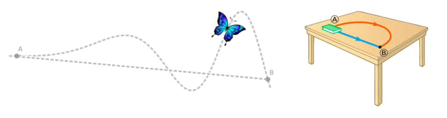
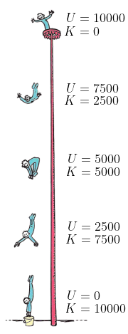
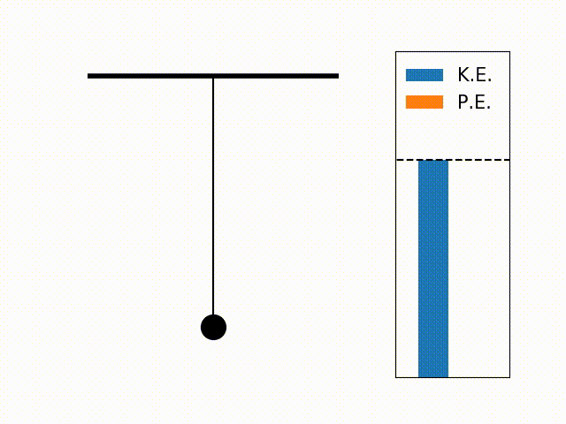

Aula2-22: Energia mecânica
A energia mecânica de um corpo é, resumidamente, a soma da sua energia cinética (a energia associada ao movimento) com a sua energia potencial (a energia associada à posição):
$${ E = K + U }$$
$${ }$$
Forças conservativas e dissipativas
Quanto ao modo como realizam trabalho, podemos classificar as forças em dois grupos:
-
Forças dissipativas: por definição, uma força dissipativa é aquela cujo trabalho depende da trajetória percorrida. Também podemos dizer que é a força que dissipa a energia mecânica de um sistema, transformando-a em outras formas de energia, como a térmica e a sonora. São exemplos dessas forças:
◦ Força de atrito
◦ Força de arrasto

-
Forças conservativas: por definição, uma força conservativa é aquela cujo trabalho não depende da trajetória, mas apenas dos pontos inicial e final do percurso. Também podemos dizer que, num sistema em que atuam apenas forças conservativas, a energia mecânica se conserva. São exemplos dessas forças:
◦ Força gravitacional
◦ Força elástica
◦ Empuxo
◦ Força eletrostática

Sistemas
Em Física, chamamos de sistema um recorte da realidade que escolhemos analisar. Na superfície terrestre, agem sobre um corpo inúmeras forças, e a grande maioria delas produz efeitos imperceptíveis. Por isso, convém "deixar de fora" essa multidão de forças e considerar apenas a parte da realidade que nos interessa — é isso que significa delimitar um sistema.
Ao fazer essa escolha, o nosso sistema pode conter apenas forças conservativas ou, também, forças dissipativas. Vejamos cada caso:
-
Sistema conservativo: é o sistema em que só atuam forças conservativas. Como consequência, a energia mecânica se conserva: ela pode mudar de forma (cinética ↔ potencial), mas o total permanece constante.


-
Sistema dissipativo: é o sistema em que atuam forças dissipativas, como o atrito. Como consequência, a energia mecânica não é conservada: parte dela é transformada em formas de energia difíceis de reaproveitar, como a sonora e a térmica.